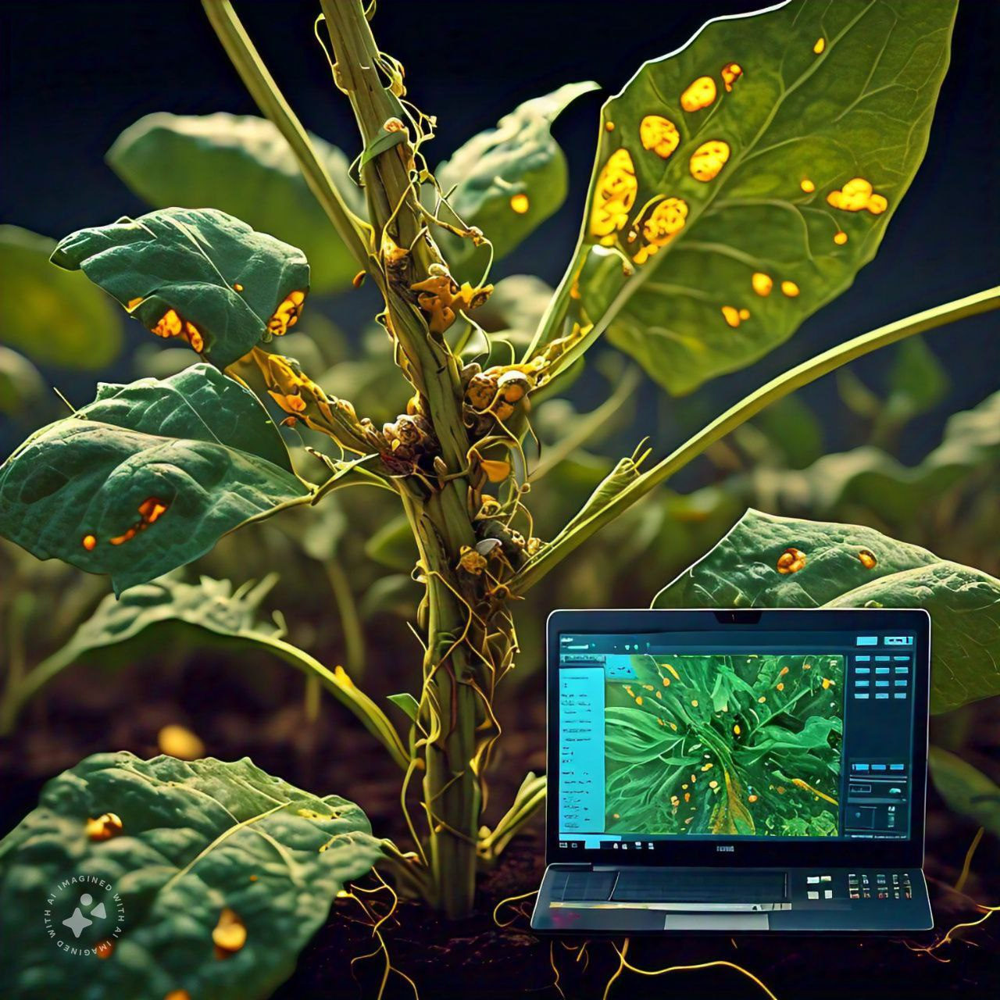
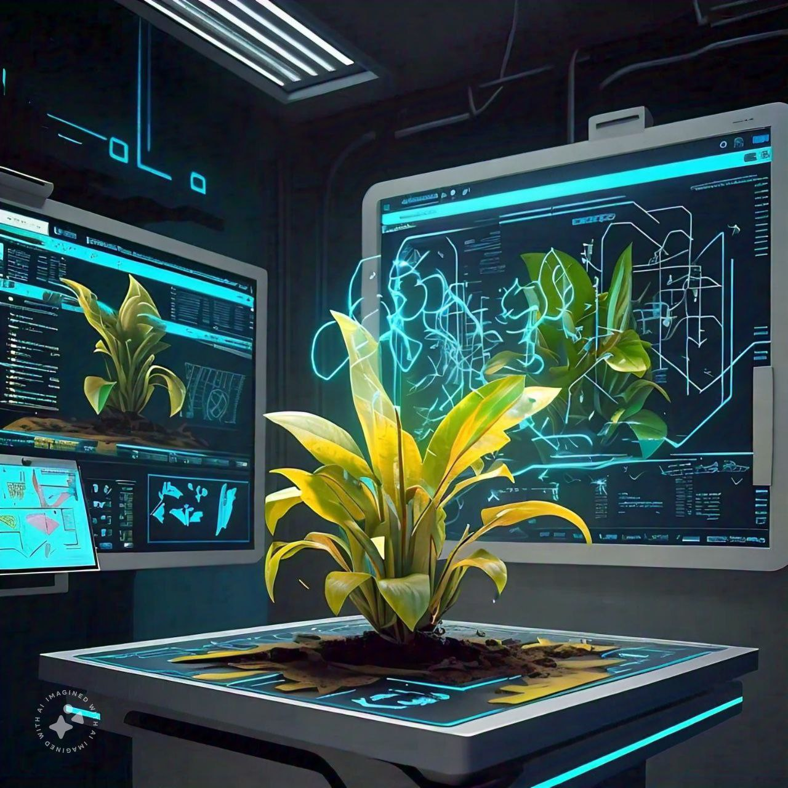

Revolutionizing Disease Detection
Discover how our advanced system diagnoses plant diseases with precision and ease.
Image Capture
High-resolution cameras capture detailed images of plant leaves and stems to identify potential diseases.

Image Analysis
Advanced algorithms analyze the images to detect anomalies and disease patterns with high accuracy.

Data Processing
Our system processes the analyzed data to generate precise diagnostic information and treatment suggestions.

Result Presentation
Receive comprehensive reports on detected diseases and recommended treatments, ensuring effective plant care.
